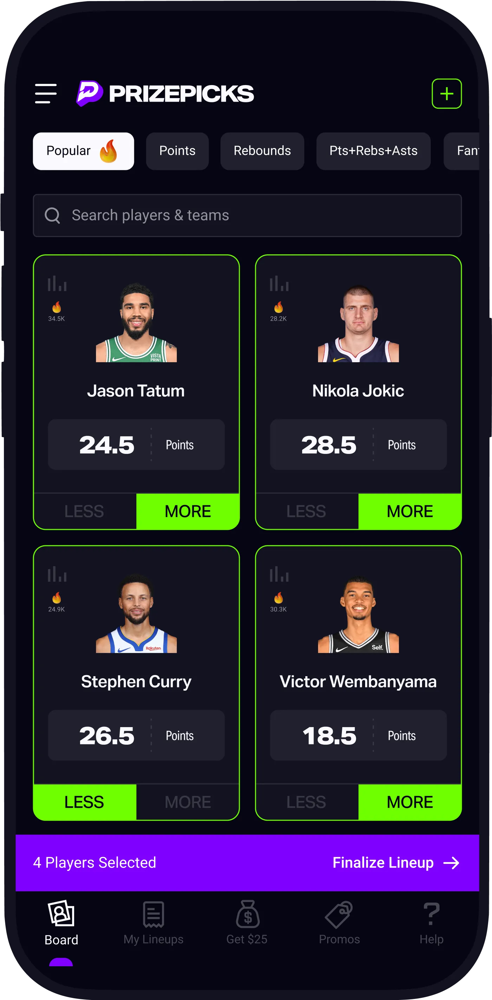

By Joseph Zou

My introduction to sports betting started with my friend Ryan on the way to our first Warriors game together. The tickets cost a hundred dollars each, and during the drive Ryan introduced me to PrizePicks. That night, I placed a fifty dollar bet that turned into one hundred fifty when Steph Curry came up with a steal in the final minute of the game. The Chase Center erupted and it felt like the universe had aligned in that single moment. Watching Steph seal the game while also hitting my bet was one of the most electrifying sports experiences of my life. I had already been a die-hard Warriors fan who never missed a game, but that night sparked something new. I began to wonder if my passion and attention to detail could be channeled into something more than just cheering from the stands.
Over time, frustration set in. Even after watching every Warriors game and studying box scores, my picks would often miss. I started to wonder if there was a more systematic, data-driven way to approach player props. Could machine learning give me an edge where intuition and gut feel often failed? That question became the foundation for my NBA Prop Predictor project.
I began by collecting player game logs, team stats, and matchup data using the nba_api Python library.
I wanted the predictor to feel like a tool I would have used back when I was betting daily, something that could
synthesize the massive amount of basketball data into clean and actionable insights.
My early models were simple. I started with weighted averages that adjusted a player’s recent performance by matchup strength
and team rankings. For example, if Steph Curry had been averaging 28 points over the last five games but was facing
a top-ranked defense, the system would adjust expectations downward.
As I added more features, the predictor became more robust. I incorporated opponent-specific splits, pace of play, and even back-to-back scheduling effects. Eventually, I experimented with scikit-learn models, exploring regression techniques that could capture patterns beyond what simple averages could.
Working on this project quickly showed me the limits of prediction in sports. No model could anticipate injuries, sudden coaching decisions, or the randomness of basketball itself. For example, I remember games where Curry or Klay Thompson would sit longer than expected due to foul trouble, making any prop prediction useless. This randomness forced me to think critically about the role of uncertainty and how to communicate that in predictions.
I also realized the importance of good evaluation metrics. It was not enough to say “my model predicted 25 points and the player scored 23.” I needed a framework to evaluate consistency across many games and categories like points, rebounds, and assists. Cross-validation and error measurement became just as important as building the model itself.
Building the NBA Prop Predictor taught me two key lessons. First, I learned how data science could transform a personal frustration into an exciting project. What started as excitement and later annoyance at losing PrizePicks slips became an opportunity to apply machine learning to something I genuinely cared about. Second, I learned that data-driven systems must account for uncertainty, especially in contexts as unpredictable as sports. Even the best model is not a crystal ball, but it can still provide structure and insight to guide decisions.
While I no longer bet on sports, this project gave me valuable experience that I continue to use. It strengthened my technical skills with Python, Pandas, and scikit-learn, but it also deepened my ability to connect technical work with real-world passion. As I keep learning and building, I want my projects to live at that same intersection: technical rigor fueled by personal curiosity.